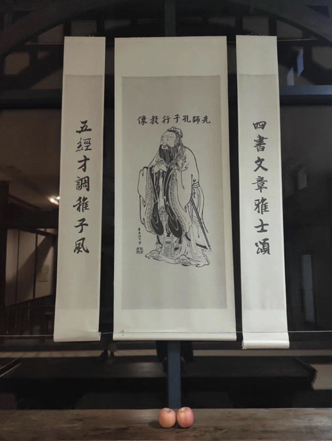

Hello Confucious!
In the main library of my college Shanghai Jiao Tong University, there is a big Confucious portrait hanging on the wall. During the finals week, somehow as a traditional, mnany students would bring an apple and place it onto the table in front of the portrait, praying that they could get good scores. Inspired by this, we have decided to design an interactive little game called "Hello Confucious" in which students can "talk" to the portrait and get some fun during the exhausting finals week.